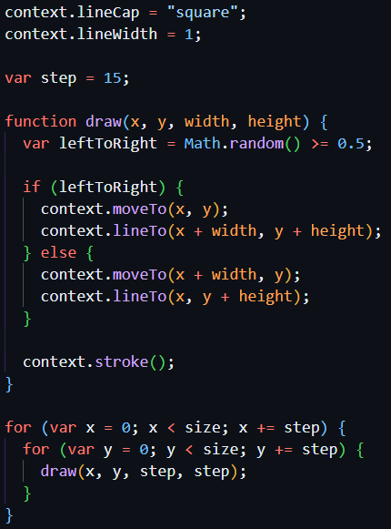

Maze
This is based on Generative Artistry's tiled lines tutorial; however, I made some adjustments to the canvas size and line width. This is my first time using HTML's canvas tag and first introduction to generative art. I recommend reading through the tutorial to best understand how this works, but I'll write my own explanation below to try to consolidate my own understanding.

There is some initial code that sets up the canvas size and scale. I've given my canvas an id of "maze", so first we can store that in a variable named "canvas". HTMLCanvasElement.getContext() returns a drawing context on the canvas. This creates a CanvasRenderingContext2D object representing a two-dimensional rendering context, provides access to a bunch of methods via the CanvasRenderingContext2D prototype. This includes methods such as moveTo(), lineTo(), and stroke(), which are used for this tutorial.

To understand the above code, I think it's helpful to outline some technical terminology.
- Logical pixels: These are also referred to as CSS pixels. They don't have any inherent physical dimensions. On most screens, one logical pixel corresponds to one physical pixel; however, some high-density screens use multiple physical pixels to represent a single logical pixel.
- Physical pixels: These are the actual physical pixels on a given device. As above, one or more physical pixels might make up a logical pixel.
- PPI: Pixels per inch measures the pixel density on an electronic device.
- DPR: Device pixel ratio is the ratio between the physical pixel density of a device and its logical pixel density. The higher the DPR, the more physical pixels representing logical pixels.
- Screen resolution: This is the number of physical pixels in the display, typically quoted as width x height.
- Viewport resolution: This is the number of logical pixels in the display, typically quoted as width x height.
So with the above terminology in mind, multiplying size and DPR gives us the actual canvas width and height in physical pixels, rather than the 320 logical CSS pixels.
By default, one unit on a canvas is one pixel. Scaling based on DPR will then adjust the units based on the DPR, so one unit will be one physical pixel.
Examples
In the original tutorial, the size is given by the window inner width, but I found this results in a very different appearance of the maze on mobile vs desktop, so I chose to use the fixed size of 320 to match the logical CSS pixels. If you look at their CodePen, they've actually done the same there.
On my desktop monitor, the DPR is 1. The size is 320. So my canvas width and height are 320 physical pixels. One unit in the canvas will be one physical pixel.
On my mobile, the DPR is 2.73. The size is 320. So my canvas width and height are approximately 874 physical pixels. One unit in the canvas will be 2.73 physical pixels.
Drawing
Finally, we can look at the code that draws the maze.
The draw function takes x, y, width, and height, which are used to define the start and end points of the line. context.stroke() then draws a stroke between those two points. In the draw() function, there's a 50% chance that the line starts at x, y, or x + width, y, and the rest is pretty self-explanatory.
Then, in a for loop, we loop through y values and run draw each time, incrementing y by 15 each loop. Then we loop through the x values. So essentially, we're drawing the strokes in columns that are 15 logical pixels wide from top to bottom, starting at x = 0 and incrementing +15 each time, up to 320. Each diagonal line is in the middle of a 15 x 15 square.